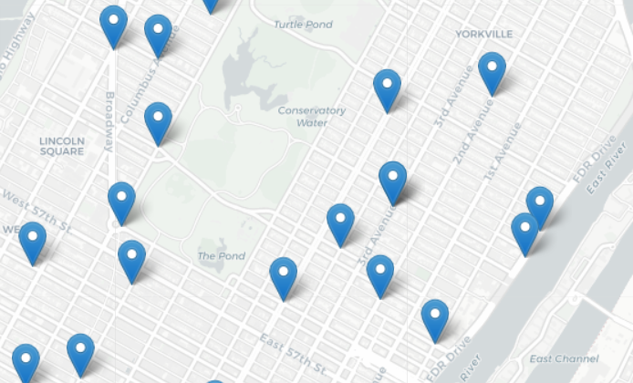

MfA Workshop: Python in the City
What's the noisiest street in the city? And which streets have the most collisions? What trees are most commonly planted in the streets in your neighborhood? What parts of the city are above the 100-year flood level? We will explore these and related questions using Python and publicly available data about New York City. This mini-course is organized into three sessions, each focused on a challenge, that introduces intermediate programming concepts using the Python programming language and popular packages that allow the analysis of structured data and the visualization via graphs and HTML navigable maps. The workshop, via the challenges and variations, provides a multitude of scalable projects for use in the classroom.
Prerequisites: Assumes basic knowledge of Python: familiarity with basic variable types (integers, real numbers, characters, strings and lists), input/output, definite loops (for-loop), and decisions.
Session 1: Elevation Maps (Arrays & Images)
Wednesday, 6 November 2019

Our first challenge is to build a 'flood map' of New York City metro area. We start by exploring what data is needed and how to present the information, and then introduce the numerical analysis package, numpy, to store grids (2 dimensional arrays) of elevations of the region. We then use loops and decisions to traverse the array and create an image reflecting waterways and flood regions of the metropolitan are. We introduce red-green-blue color codes to construct our flood maps. The session ends with variations on the theme of maps based on elevations, slicing (accessing subsections of arrays), and representing colors in hexadecimal codes.
- Slides: Session 1
- Concepts covered: creating and traversing 2-dimensional arrays, decisions, data representation of colors (red-green-blue codes and hexadecimal codes).
- Packages used: numpy, matplotlib.pyplot, both part of the freely-distributed anaconda release of Python.
- Data used:
- Elevation data from US National Oceanic and Atmospheric Administration (NOAA)
(Save as text, and remove 5 lines of metadata at top of file before using).
- Cleaned dataset of NYC: elevationsNYC.txt.
- References:
- The flood maps exercise is based on an on-line lab for our introductory programming course (scroll halfway down): Lab 3.
- It was inspired by a Nifty program on mountain paths by Baker Franke.
- A lovely visualization of Hurricane Sandy flooding by the New York Times.
Session 2: Analyzing City Data (Structured data & File I/O)
Wednesday, 20 November 2019

The focus for the second meeting is analyzing structured data. We will start with opening spreadsheets (CSV files) and graphing the data (a la Excel). The opening challenge is on historical population data of New York City and answering questions such as: how has the population changed over time? What fraction of the population lives in your borough? As well as demonstrating some of the basic statistics that are included (e.g. minimum, mean, correlation). We then look at some data sets from NYC OpenData: daily school attendance, homeless shelter populations, parking tickets and 311 data. Our follow-up questions include: what days have the highest attendance at your school? what color cars get the most parking tickets in your neighborhood? What is the most common 311 complaint?
- Slides: (will be uploaded on 11/20)
- Concepts covered: file I/O, list (series) manipulation, basic statistics, analytic reasoning (if time: binning data).
- Packages used: pandas, matplotlib.pyplot, both part of the freely-distributed anaconda release of Python.
- Data used: New York City historical population (wiki) and several datasets from NYC OpenData: daily attendance, homeless shelter data, 311 calls, and parking tickets.
Session 3: Mapping City Data (Using Objects & Mapping Coordinates)
Wednesday, 11 December 2019

Our opening challenge is: where do collisions occur? For this last session, we focus on mapping GIS coordinates. We begin with a review latitude and longitude and mapping NYC landmarks with turtle graphics. We then introduce the folium package (a Python wrapper for leaflet.js) that makes interactive maps that be viewed in a browser (like google maps). We then move onto collisions, and work through filtering the data, and plotting collisions by GIS locations and color coding by vehicles involved (did it involve a taxi? a commercial vehicle?) and time. Our follow-up questions involve transferring these mapping techniques to other open NYC data sets.
- Slides: (will be uploaded on 12/11)
- Concepts covered: Using objects (instantiating and altering attributes), traversing data from files, review of coordinate systems and latitude and longitude.
- Packages used:
turtle, pandas, & folium. turtle is part of every Python distribution;
pandas is included in the freely-distributed anaconda release of Python.
folium, a Python-wrapper for leaflet.js, is freely available.
- Data used: Locations of CUNY campuses, NYC libraries, and NYC collision data (all from NY State or NYC open data projects).